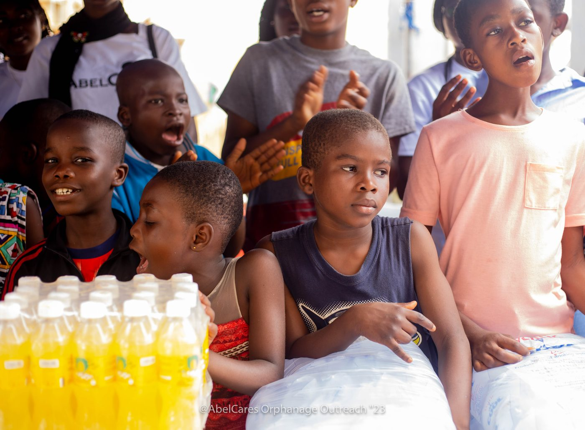
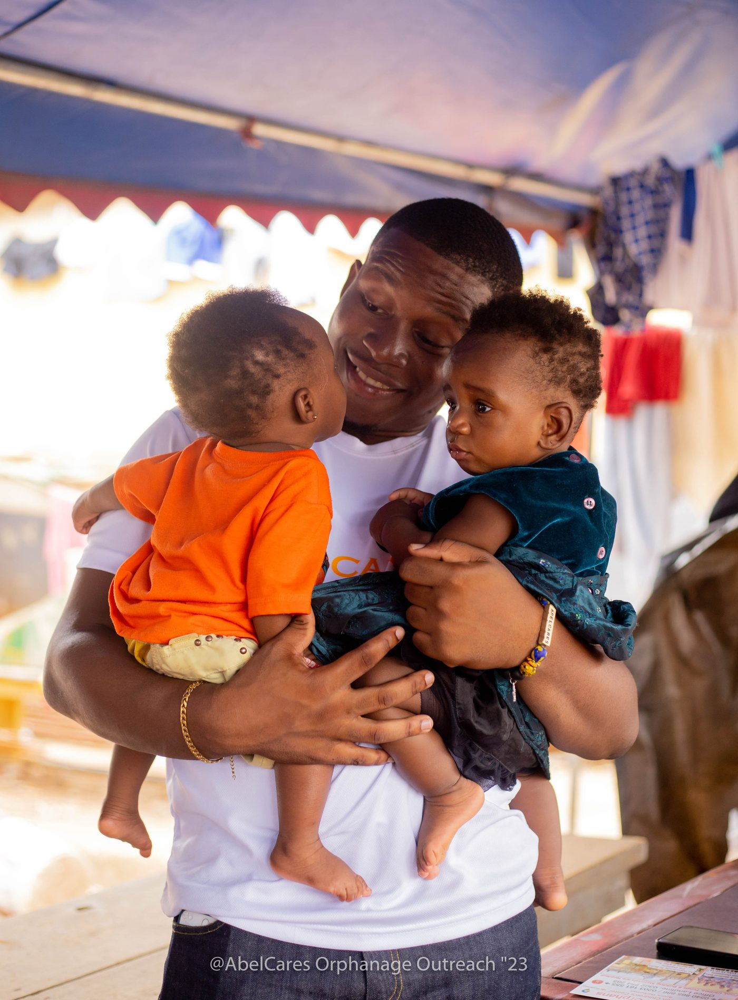

A continent’s future is measured by how it dignifies the human mind, educates the young, and protects the vulnerable.
AbleCares Initiative Africa (ACI Africa) addresses the structural silence surrounding African mental health, the widespread exclusion of neurodivergent children, and the untapped leadership of youth across our communities.

Three Core Pillars of Intervention
Rather than dispersing effort across disconnected charitable activities, ACI Africa directs its human and institutional resources into three mutually reinforcing operational divisions.
PAMHO
Pan-African Mental Health Organization
Advancing mental health equity across Africa by confronting cultural stigma, providing community-level psychological first aid, and building culturally attuned mental health literacies.
AbleKids
Neurodiversity & Special Education Support
Supporting children on the autism spectrum, learning difference communities, and their families. Equipping educators with inclusive classroom strategies and compassionate caregiver counseling.
EmpoweredTalks
Youth Leadership & Peer Mentorship
Cultivating next-generation African advocates through secondary and tertiary peer-mentorship networks, equipping youth to lead compassionate mental wellness circles.

Moving from Silence to Sustainable Community Care
Across many African communities, emotional distress and developmental differences are too often met with silence, fear, or spiritual misunderstanding. When families lack access to objective psychoeducation, children with learning diversities are excluded from classrooms, and young people experiencing depression navigate isolation alone.
"When a community learns that psychological distress is a human reality rather than a moral failure, fear dissolves into collective care."Field Leadership Dispatch ACI Africa Outreach Program, Greater Accra
ACI Africa operates at the intersection of medical psychology and authentic cultural understanding. We do not replace local community structures; we resource them with scientifically grounded, culturally dignified frameworks.
Our Accountability to Beneficiaries, Partners & Donors
We believe an African NGO must withstand the most rigorous scrutiny from international grantmakers, philanthropic foundations, and the communities we serve.
1. Transparent Pledges & Allocation
We decline to publish fabricated statistics or make unverified claims. Every financial contribution begins as an authorized pledge, tracked directly by our Accra governance council and deployed to verified field logistics.
2. Institutional Grantmaker Access
We welcome bilateral MoUs, independent audits, and programmatic site inspections with institutional funders, universities, and international development agencies.
The ACI Africa Gazette
Direct dispatches from our field operations, community mental health curricula, and policy research across Ghana and West Africa. No marketing noise.